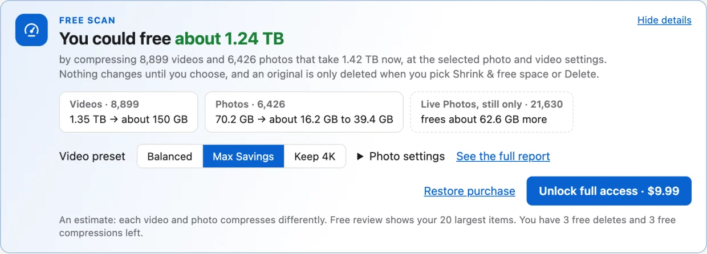
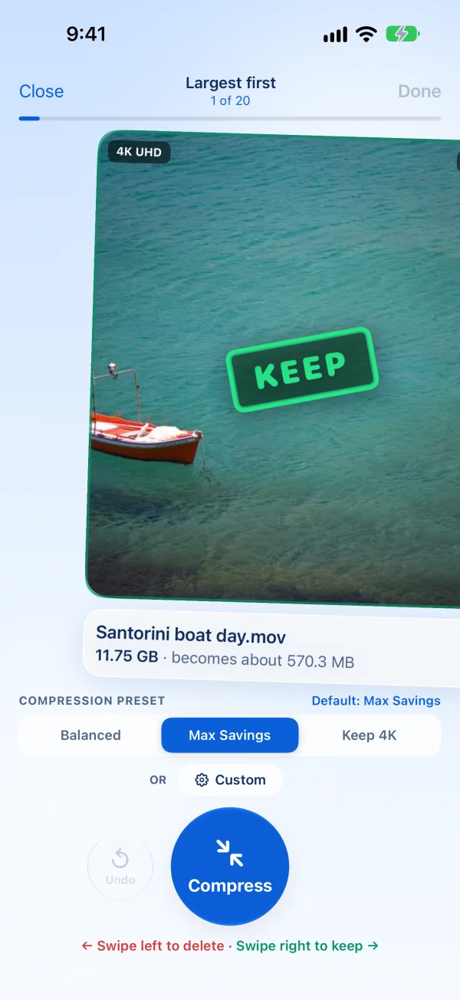
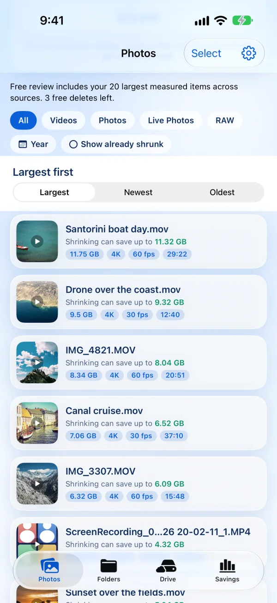

How to use Cloud Media Shrinker
Short answers for iPhone, iPad and Mac. Start with the free scan, review your biggest files, and nothing changes until you choose.
This page describes version 1.2.1. Anything marked Coming in 1.2.2 isn't in the app yet. See what's coming.
Jump to a section
01Getting started
Install
Get Cloud Media Shrinker from the App Store on iPhone or iPad (iOS 27 or later) and from the Mac App Store on a Mac (macOS 13 or later). The download is free. One purchase unlocks both, see Unlocking.
iPhoneGive it access to Photos
- Open the app and go through the three intro pages.
- Tap Allow Access to Photos, then choose Allow Full Access when iOS asks.
If you only share some photos, the app asks for full access and offers Open Settings. It needs the whole library to find what takes the most space. Your library stays on your iPhone.
MacGive it access to Photos
- The first launch runs a short tour with sample files. You can skip it.
- Choose Apple Photos in the sidebar and allow access when macOS asks.
- On macOS 13 to 26 it also asks you to Select Photos Library once. That lets it read file sizes without downloading every original from iCloud. It only reads the library, and it doesn't switch libraries. In the window that opens:
- Go to your Pictures folder. If the window opened in your home folder, double-click Pictures. Otherwise click Pictures in the window's sidebar if it's listed, or type ~/Pictures and press Return.
- Click Photos Library once to select it. It may show as Photos Library.photoslibrary. Don't double-click it, because that opens it like a folder.
- Click Read Sizes.
Skip Photos under Media in the window's sidebar. It shows single photos, not the library, so Read Sizes stays grayed out. If Photos Library isn't in Pictures, open Photos, choose Photos > Settings > General and click Show in Finder next to the library's location. Then drag Photos Library from that Finder window onto the window that's asking. Coming in 1.2.2 The window opens in Pictures for you.
- When your first queue starts, macOS asks whether the app can control Photos. Allow it. That's how titles, captions and keywords get copied. Without it the app keeps your originals.
If you gave it access to only some photos, open System Settings > Privacy & Security > Photos, give it full access, then quit and reopen the app.
The first scan
The scan only measures. It doesn't change, move or upload anything. On iPhone you get an Estimated savings ring with videos, regular photos and Live Photos broken out. On the Mac you get a Free scan card that says how much you could free, with See the full report for the before and after.
The number depends on the preset you pick, and it's an estimate: every file compresses differently. Live Photo savings are optional. They count on keeping only the still photo.


02Frequent issues
Quick fixes for the questions that come up most. Tap the # next to one to copy a link to it.
A compressed video sounds hollow, like a tin canCopy a link to this answer
This seems to hit videos with more than one audio track, like spatial audio from newer iPhones. A fix is planned for 1.2.2. Coming in 1.2.2 Until then, keep the originals of videos where the sound matters. If you already deleted one, it's usually still in Recently Deleted in Photos for 30 days, unless you were over your iCloud storage limit.
MacRead Sizes is grayed outCopy a link to this answer
The window is probably showing single photos, not the library. That happens if you click Photos under Media in its sidebar. Go to your Pictures folder instead, click Photos Library once, then click Read Sizes. The setup steps say where to look if it isn't there.
If the app then says it couldn't read size records, a folder was chosen instead of Photos Library itself. If it says the library doesn't match, choose the library Photos opens with. Click Select Photos Library to try again.
Do I need to empty Recently Deleted to get my iCloud space back?Copy a link to this answer
No. Apple says items in Recently Deleted don't count toward your iCloud storage. They can still take space on your iPhone or Mac for up to 30 days, so empty Recently Deleted in Photos only if that device itself is short on space. If you're over your iCloud storage limit, Photos skips Recently Deleted, and deleted items can't be recovered.
My iCloud space went down but my iPhone storage went up. Why?Copy a link to this answer
To compress a video that's only in iCloud, your iPhone first downloads the full original. Once the smaller copy is in Photos, the original moves to Recently Deleted, still full size on the phone, for up to 30 days. It no longer counts toward iCloud, so iCloud goes down while the phone goes up. That space comes back on its own as items leave Recently Deleted. If you need it now, empty Recently Deleted in Photos, which removes the 30-day undo.
MacThe queue got stuck or is very slowCopy a link to this answer
A long queue can slow way down, or start failing, after 20 or 30 videos. For now, queue about 15 at a time. Quit and reopen the app between batches. Keep the screen on while it runs, keep the Mac plugged in, and leave free space on the disk. If one video is stuck, click Cancel on it in the queue and the rest carries on. You can Try again later. Coming in 1.2.2 a fix for queues that slow down or stall on long runs.
I can't edit the slow part of a slo-mo after compressingCopy a link to this answer
The copy plays the same, but Photos no longer treats it as slo-mo, so you can't move the slow part or set it back to normal speed. Skip slo-mo videos for now if you might edit them later. Coming in 1.2.2 a warning before you compress one, and a Slo-mo filter.
I paid or redeemed a code, but it still looks lockedCopy a link to this answer
Restore the purchase. On iPhone, tap the gear on the Photos tab, then Restore Purchase under Purchase. On the Mac, click Restore purchase on the free scan card or in the unlock window. Make sure the App Store is signed in with the same Apple Account you bought with.
My code doesn't work on the website downloadCopy a link to this answer
App Store codes only work in the App Store, not at the website checkout. One App Store purchase covers your iPhone and Mac on the same Apple Account. The direct download for Mac on this website is a separate purchase.
Where do I enter a code?Copy a link to this answer
Tap the code's link if you have one. It opens the App Store with the code filled in. Or open the App Store and use Redeem Gift Card or Code: on iPhone it's under your account picture, and on a Mac under your name at the bottom of the sidebar.
The price shows a different amountCopy a link to this answer
The App Store shows prices in your local currency, so the number won't always match the US price.
My family doesn't have itCopy a link to this answer
Family Access is shared through Family Sharing, so the person who bought it needs Purchase Sharing turned on. Then each family member opens the app and taps Restore Purchase. An Individual purchase isn't shared. It won't show up under subscription sharing, since it's a one-time purchase: how to share it.
The same video shows up twiceCopy a link to this answer
If one has (compressed) in its name, it's the smaller copy, and the original goes once the queue finishes or when you delete it. Otherwise it's usually two real copies in your library. Photos can merge them: look for Duplicates under Utilities.
iPhoneCompressing stops when I leave the appCopy a link to this answer
iOS can pause the work in the background. Nothing is lost: the video goes back in the queue and carries on when you open the app again, or later by itself while your iPhone isn't in use. If iOS closed the app, open the queue and tap Carry On.
03Reviewing your biggest files
The presets
Every compression uses one of three presets. On iPhone you can change it for any single video.
- Max Savings (the default): 720p at most, 30 fps at most, HEVC, medium quality. The Mac estimates about 85% smaller.
- Balanced: 1080p at most, 30 fps at most, HEVC, high quality. About 70% smaller.
- Keep 4K: keeps the resolution and frame rate, HEVC, high quality. About 45% smaller.
HDR stays HDR. Custom lets you pick resolution, frame rate, format and quality yourself. JPEG and RAW photos become HEIC copies, and a Live Photo can become a still-only copy.
iPhoneSwipe through cards
- Tap Review biggest first and pick a default preset for the deck.
- Swipe right to keep. Swipe left to mark it for deletion. Tap Compress to make a smaller copy. Undo takes back the last card.
- Tap Done. You'll see everything you picked on one screen before anything happens.
Keep happens right away and hides the item from the list. Deletes and compressions wait until you confirm. If you close the deck early, nothing has been compressed or deleted yet.
iPhoneOr use the list
The Photos tab lists everything largest first. Swipe a row right to keep it, or left for Delete, Compress and Still copy. Tap Select to pick many at once, for example the largest 25.
Sort by Largest, Newest or Oldest. Filter by Videos, Photos, Live Photos, RAW or year. Show already shrunk brings back items you've already compressed.


MacPick from the grid
Each card has Shrink & free space, Keep and Delete. Picks collect in a bar at the bottom. When you're ready, click Shrink & free space in that bar, check the settings and click Start.
Switch to Advanced to get separate Compress (keeps the original) and Compress & delete buttons. In the viewer, K keeps, C compresses, B compresses and deletes, and X deletes.
Auto pick
Auto pick selects everything above a size you choose, largest first. Nothing happens until you look them over. It leaves 10 GB free for downloads from iCloud.
04What happens to originals
- The copy comes first. If an original is only in iCloud, it's downloaded at full quality. The smaller copy is saved to Photos next to it, with the same capture date, location, Favorite and albums.
- The copy is checked. It has to be at least 10% smaller and the same length. Right before deleting, the app checks again that nothing changed. If something doesn't match, it keeps the original and tells you why.
- Originals go at the end. With Delete originals when done on (iPhone) or Delete each original once its smaller copy is in Photos ticked (Mac), the originals are deleted together once the whole queue finishes. Photos asks you to confirm first.
Turn that option off to keep your originals. You can delete them later from Savings, or undo a compression, which deletes the copy and keeps the original.


Recently Deleted and iCloud space
Deleted photos and videos go to Recently Deleted in Photos for 30 days, so you can still get them back. Items in Recently Deleted no longer count toward your iCloud storage. They still take space on your iPhone or Mac until they're removed, so empty Recently Deleted if you need that space now.
Over your iCloud storage limit? Then deletes skip Recently Deleted. Photos and videos you delete are removed right away and can't be recovered there. Apple's iCloud Photos storage guide has the details. Check your copies first.
Copies show up as newly added. In Photos, sort by capture date to see them in their original spot.
05Long queues
A big 4K video can take a long time to compress, and a queue of hundreds can run for hours.
MacKeep it moving
- Keep it plugged in, with the lid open and the screen on. The app keeps the Mac from going to sleep while it works, but not the display. Coming in 1.2.2 a fix for queues that slow to a crawl on long runs.
- Leave room on the disk. Each original that's only in iCloud needs its size plus 2 GB free to download, or that job fails. The copies also add up until the queue finishes, because the originals go at the end.
- Don't quit. Quitting stops the queue and throws away the progress on the current file. The app asks first.
iPhoneWhen you leave the app
Keep the app open if you can. iOS shows a progress card while it works in the background, but it can pause the work at any time. When that happens, the current file goes back in the queue and nothing is lost. It carries on when you come back, or later by itself while your iPhone isn't in use.
If iOS closed the app, the queue shows what didn't finish, with Carry On to pick it back up. The screen won't lock on its own while jobs are queued.
06Unlocking and offer codes
What's free
The scan is free. So is reviewing your 20 largest items, plus 3 compressions and 3 deletes on each device. A compression only counts when a copy is finished, and deleting the original after it is included. Keep doesn't count against anything.
One purchase, iPhone and Mac
- Individual unlocks everything on your devices that use the same Apple Account. Buy it once on iPhone or in the Mac App Store.
- Family Access shares the unlock with up to five family members through Family Sharing.
- Family Upgrade is for people who already own Individual, including from an offer code, and for early Mac users. It costs less than buying Family on its own.
The direct download for Mac on this website is a separate purchase. It's the Mac app with everything unlocked, and it doesn't unlock the iPhone or iPad app.
Redeem an offer code
- Tap the code's link if you have one. It opens the App Store with the code filled in.
- Or on iPhone: open the App Store, tap your account picture, then Redeem Gift Card or Code.
- On a Mac: open the App Store, click your name at the bottom of the sidebar, then Redeem Gift Card.
Prices show in your local currency.
Restore a purchase
On iPhone, tap the gear on the Photos tab and choose Restore Purchase under Purchase. On the Mac, click Restore purchase on the free scan card or in the unlock window.
07Good to know
Slo-mo videos
A compressed slo-mo plays the same, slow part included. But Photos no longer treats it as slo-mo, so you can't move the slow part or set it back to normal speed. They're tagged Slo-mo in the list. Coming in 1.2.2 a warning before you compress one, and a Slo-mo filter.
Videos with spatial audio
Some compressed videos can sound hollow, like they were recorded in a can. I'm looking at how videos with spatial or several audio tracks are handled. Coming in 1.2.2 a fix. Until then, keep the originals of videos where the sound matters.
Duplicates
Photos has its own duplicate finder. Look for Duplicates under Utilities in Photos, on iPhone and on the Mac.
Folders and Google Drive
- Mac: choose Local Folder or Google Drive in the sidebar and add a folder. Google Drive needs Google Drive for desktop. Files that are only in the cloud download when you compress them.
- iPhone: the Folders tab works with any folder in Files. The Drive tab sends you a link to the Mac app, which handles Google Drive.
- Smaller copies go in a Compressed folder inside the folder you chose. Deleted originals go to the Trash, or Google Drive's trash.
Keeps and Savings stay on each device
What you've kept and what you've saved are tracked on each iPhone and Mac separately. They don't sync yet.
08Getting help
- Mac: Report a bug and Send feedback are at the bottom of the sidebar and in the Help menu.
- iPhone: tap the gear on the Photos tab. Under Help you'll find Report a Bug, Send Feedback and Email Support.
If the app doesn't have full access to Photos yet, the gear isn't there. Email me instead.
A report goes privately to me. You can add up to 3 screenshots and an email if you want a reply. App diagnostics are included unless you turn them off, and you can read them first: the app and system versions, the chip type and the app's recent events. They never include file names, library paths or your library history. Anything you can see in a screenshot you attach does get sent.
Or email support@danielyakobian.com. Here's the privacy policy.
Curious what's next? See What's coming.